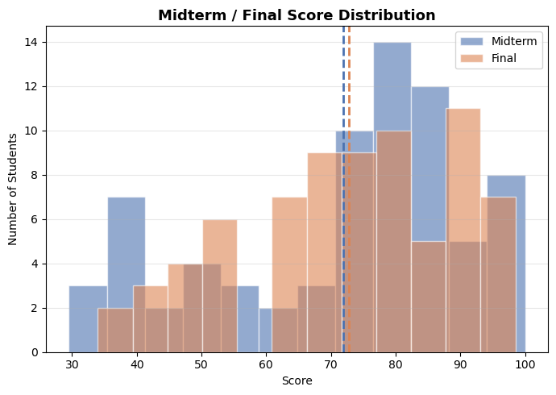
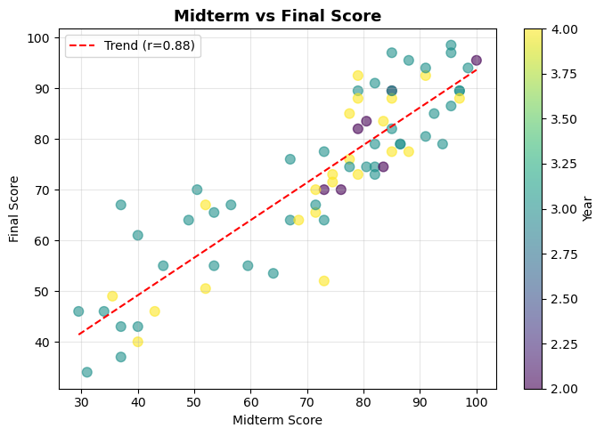
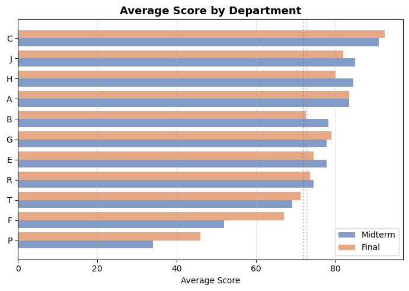
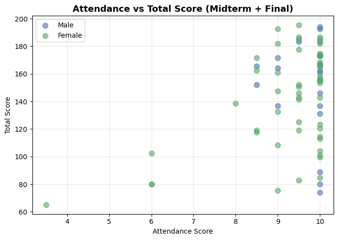
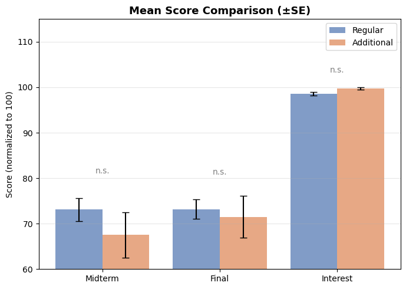

1장 시험성적 분석#
1. 시험 성적 업로드 & 분석#

출처: 시험성적(가상) CSV 파일
Claude 분석#
총 73명 학생의 성적 데이터를 분석한 결과입니다.
📊 전체 점수 현황
항목 |
평균 |
최소 |
최대 |
|---|---|---|---|
중간고사 |
71.9점 |
29.5 |
100.0 |
기말고사 |
72.8점 |
34.0 |
98.5 |
출석 |
9.4점 |
3.5 |
10.0 |
관심도 |
98.8점 |
82.8 |
100.0 |
🔍 주요 인사이트
학생 구성 — T학과가 45명(62%)으로 압도적으로 많고, 3학년(44명)이 주를 이루며, 여학생(51명) 비율이 높습니다.
중간-기말 상관관계 — 상관계수 0.883으로 매우 높습니다. 중간고사를 잘 본 학생이 기말고사도 잘 보는 경향이 뚜렷합니다.
성별 차이 — 남학생(중간 77.0 / 기말 75.7)이 여학생(중간 69.7 / 기말 71.6)보다 평균적으로 높지만, 출석은 여학생과 비슷한 수준입니다.
학년별 차이 — 2학년(중간 82.4 / 기말 80.7)이 3·4학년보다 점수가 높습니다. 표본이 7명으로 적어 해석에 주의가 필요합니다.
이수구분별 차이 — 일선(82.0 / 80.2) > 다선(75.1 / 74.1) > 전선(70.1 / 71.8) 순으로, 전선 학생들의 점수가 상대적으로 낮습니다.
추가신청 — 15명(21%)이 추가 신청했으며, 관심도는 대부분 100점에 가깝게 높은 편입니다.
그래프#
① Midterm / Final Score Distribution (히스토그램) 중간·기말 점수 분포를 겹쳐서 보여줍니다. 두 시험 모두 70점대 초반에 평균(점선)이 위치하며, 분포가 넓어 학생 간 점수 편차가 꽤 큰 편입니다.

② Midterm vs Final Score (산점도) 중간고사와 기말고사 점수의 관계를 나타냅니다. 상관계수 r=0.88로 추세선 기울기가 가파르며, 중간을 잘 본 학생이 기말도 잘 보는 경향이 뚜렷합니다. 점 색상은 학년을 나타냅니다.

③ Score Distribution by Gender (박스플롯) 남녀별 중간·기말 점수 분포를 박스플롯으로 비교합니다. 남학생의 중앙값이 여학생보다 소폭 높고, 여학생 쪽에 낮은 점수 이상치(outlier)가 더 많이 보입니다.

④ Average Score by Department (수평 막대) 학과별 중간·기말 평균을 비교합니다. 점선은 전체 평균으로, A·G·H 학과가 평균 이상, P·F·B 일부 학과가 평균 이하에 위치합니다. 단, T학과를 제외하면 대부분 소수 인원이라 해석에 주의가 필요합니다.

⑤ Average Score by Course Type (막대) 이수구분(전선·다선·일선)별 평균을 비교합니다. General Elective(일선) > Multi Elective(다선) > Major Elective(전선) 순으로 높으며, 전선 수강생의 점수가 상대적으로 낮습니다.

⑥ Attendance vs Total Score (산점도) 출석 점수와 중간+기말 합계의 관계를 성별로 구분해 보여줍니다. 출석 점수가 대부분 9~10점에 몰려 있어 출석과 성적 간 뚜렷한 상관관계는 보이지 않습니다.

2. 추가신청 수강생들의 성적이 상대적으로 낮은가?#
Claude 분석#
추가신청 여부에 따른 성적을 비교해볼게요.


결론: 추가신청 수강생의 성적이 낮은 경향은 있지만, 통계적으로 유의하지 않습니다.
항목 |
일반 (n=58) |
추가신청 (n=15) |
차이 |
|---|---|---|---|
중간고사 |
73.1 |
67.5 |
-5.6 |
기말고사 |
73.2 |
71.5 |
-1.7 |
합계 |
146.3 |
139.0 |
-7.3 |
출석 |
9.36 |
9.40 |
+0.04 |
관심도 |
98.6 |
99.8 |
+1.2 |
수치상으로는 추가신청 수강생의 중간고사 점수가 약 5.6점 낮지만, 모든 항목에서 p-value > 0.05 (n.s.)로 통계적으로 유의미한 차이라고 보기 어렵습니다. 추가신청 수강생 수가 15명으로 적어 검정력이 낮다는 점도 고려해야 합니다.
흥미롭게도 출석과 관심도는 오히려 추가신청 수강생이 소폭 높아, 이들이 수업에 더 적극적으로 임하고 있음을 시사합니다.
3. 의미를 설명해줘#
p-value > 0.05 (n.s.)로 통계적으로 유의미한 차이라고 보기 어렵다
Claude 분석#
쉽게 설명하면 이렇습니다.
p-value란? “이 정도 점수 차이가 그냥 운(우연)으로도 생길 수 있는 확률”입니다.
p = 0.330 (중간고사) → 이 정도 차이는 33% 확률로 그냥 우연히 발생할 수 있다는 뜻
보통 p < 0.05 (5%) 이하일 때 “우연이라고 보기엔 너무 낮다, 진짜 차이가 있다”고 판단합니다
이번 데이터에 적용하면?
추가신청 수강생의 중간고사 평균이 5.6점 낮긴 하지만, 추가신청 그룹이 15명밖에 안 됩니다. 사람 수가 적으면 원래 점수 차이가 있더라도 “그냥 우연히 낮은 사람들이 몰렸을 수도 있잖아?”라는 의심을 통계적으로 걷어낼 수가 없습니다.
비유하자면
동전을 10번 던져서 7번 앞면이 나왔다고 “이 동전은 앞면이 더 잘 나오는 동전이다”라고 확신하기 어렵죠. 하지만 1000번 던져서 700번 앞면이 나왔다면 확신할 수 있습니다. 표본이 클수록 같은 차이도 더 신뢰할 수 있습니다.
정리
이번 결과 |
|
|---|---|
점수 차이 |
있음 (중간고사 -5.6점) |
통계적 확신 |
없음 (표본 15명으로 너무 적음) |
결론 |
“낮은 것 같긴 한데, 확실하다고 말할 수 없다” |
추가신청 수강생이 더 많았다면 (예: 50명 이상) 같은 차이도 유의미하다는 결론이 나왔을 가능성이 높습니다.
참고: 파이썬 코드#
import pandas as pd
import numpy as np
import matplotlib.pyplot as plt
from matplotlib.patches import Patch
from scipy import stats
# ============================================================
# 1. 데이터 불러오기
# ============================================================
df = pd.read_csv('../Data/exam.csv', encoding='utf-8-sig')
df['Total'] = df['중간고사'] + df['기말고사']
colors = ['#4C72B0', '#DD8452', '#55A868', '#C44E52', '#8172B2']
# ============================================================
# 그래프 1: 중간/기말 점수 히스토그램
# ============================================================
fig, ax = plt.subplots(figsize=(7, 5))
ax.hist(df['중간고사'], bins=12, alpha=0.6, color=colors[0], label='Midterm', edgecolor='white')
ax.hist(df['기말고사'], bins=12, alpha=0.6, color=colors[1], label='Final', edgecolor='white')
ax.axvline(df['중간고사'].mean(), color=colors[0], linestyle='--', linewidth=2)
ax.axvline(df['기말고사'].mean(), color=colors[1], linestyle='--', linewidth=2)
ax.set_title('Midterm / Final Score Distribution', fontsize=13, fontweight='bold')
ax.set_xlabel('Score')
ax.set_ylabel('Number of Students')
ax.legend()
ax.grid(axis='y', alpha=0.3)
plt.tight_layout()
plt.show()
# ============================================================
# 그래프 2: 중간 vs 기말 산점도 + 추세선
# ============================================================
fig, ax = plt.subplots(figsize=(7, 5))
scatter = ax.scatter(df['중간고사'], df['기말고사'], alpha=0.6,
c=df['학년'], cmap='viridis', s=60)
z = np.polyfit(df['중간고사'], df['기말고사'], 1)
x_line = np.linspace(df['중간고사'].min(), df['중간고사'].max(), 100)
ax.plot(x_line, np.poly1d(z)(x_line), 'r--', linewidth=1.5,
label=f'Trend (r={df["중간고사"].corr(df["기말고사"]):.2f})')
ax.set_title('Midterm vs Final Score', fontsize=13, fontweight='bold')
ax.set_xlabel('Midterm Score')
ax.set_ylabel('Final Score')
ax.legend()
ax.grid(alpha=0.3)
plt.colorbar(scatter, ax=ax, label='Year')
plt.tight_layout()
plt.show()
# ============================================================
# 그래프 3: 성별 점수 분포 박스플롯
# ============================================================
fig, ax = plt.subplots(figsize=(7, 5))
data_m = df[df['성별'] == '남']
data_f = df[df['성별'] == '여']
# 남/여 × 중간/기말 → 총 4개 박스를 2쌍으로 배치
ax.boxplot([data_m['중간고사'], data_f['중간고사']], positions=[1, 2], widths=0.35,
patch_artist=True, boxprops=dict(facecolor=colors[0], alpha=0.6))
ax.boxplot([data_m['기말고사'], data_f['기말고사']], positions=[1.5, 2.5], widths=0.35,
patch_artist=True, boxprops=dict(facecolor=colors[1], alpha=0.6))
ax.set_xticks([1.25, 2.25])
ax.set_xticklabels(['Male', 'Female'])
ax.set_title('Score Distribution by Gender', fontsize=13, fontweight='bold')
ax.set_ylabel('Score')
ax.legend(handles=[Patch(facecolor=colors[0], alpha=0.6, label='Midterm'),
Patch(facecolor=colors[1], alpha=0.6, label='Final')])
ax.grid(axis='y', alpha=0.3)
plt.tight_layout()
plt.show()
# ============================================================
# 그래프 4: 학과별 평균 점수 수평 막대
# ============================================================
fig, ax = plt.subplots(figsize=(7, 5))
dept_avg = df.groupby('학과')[['중간고사', '기말고사']].mean().sort_values('중간고사', ascending=True)
y_pos = np.arange(len(dept_avg))
ax.barh(y_pos - 0.2, dept_avg['중간고사'], height=0.4, color=colors[0], alpha=0.7, label='Midterm')
ax.barh(y_pos + 0.2, dept_avg['기말고사'], height=0.4, color=colors[1], alpha=0.7, label='Final')
ax.set_yticks(y_pos)
ax.set_yticklabels(dept_avg.index)
ax.set_title('Average Score by Department', fontsize=13, fontweight='bold')
ax.set_xlabel('Average Score')
ax.legend()
# 전체 평균선 점선으로 표시
ax.axvline(df['중간고사'].mean(), color=colors[0], linestyle=':', alpha=0.5)
ax.axvline(df['기말고사'].mean(), color=colors[1], linestyle=':', alpha=0.5)
ax.grid(axis='x', alpha=0.3)
plt.tight_layout()
plt.show()
# ============================================================
# 그래프 5: 이수구분별 평균 점수 막대 (수치 표기)
# ============================================================
fig, ax = plt.subplots(figsize=(7, 5))
isu_map = {'전선': 'Major Elective', '다선': 'Multi Elective', '일선': 'General Elective'}
df['CourseType'] = df['이수구분'].map(isu_map)
isu_avg = df.groupby('CourseType')[['중간고사', '기말고사']].mean()
x = np.arange(len(isu_avg))
bars1 = ax.bar(x - 0.2, isu_avg['중간고사'], 0.4, color=colors[0], alpha=0.7, label='Midterm')
bars2 = ax.bar(x + 0.2, isu_avg['기말고사'], 0.4, color=colors[1], alpha=0.7, label='Final')
ax.set_xticks(x)
ax.set_xticklabels(isu_avg.index)
ax.set_title('Average Score by Course Type', fontsize=13, fontweight='bold')
ax.set_ylabel('Average Score')
ax.set_ylim(60, 90)
# 각 막대 위에 수치 표기
for bar in bars1:
ax.text(bar.get_x() + bar.get_width() / 2., bar.get_height() + 0.3,
f'{bar.get_height():.1f}', ha='center', va='bottom', fontsize=9)
for bar in bars2:
ax.text(bar.get_x() + bar.get_width() / 2., bar.get_height() + 0.3,
f'{bar.get_height():.1f}', ha='center', va='bottom', fontsize=9)
ax.legend()
ax.grid(axis='y', alpha=0.3)
plt.tight_layout()
plt.show()
# ============================================================
# 그래프 6: 출석 점수 vs 중간+기말 합계 산점도
# ============================================================
fig, ax = plt.subplots(figsize=(7, 5))
gender_colors = {'남': colors[0], '여': colors[2]}
gender_labels = {'남': 'Male', '여': 'Female'}
for gender, group in df.groupby('성별'):
ax.scatter(group['출석'], group['Total'], alpha=0.6,
c=gender_colors[gender], label=gender_labels[gender], s=60)
ax.set_title('Attendance vs Total Score (Midterm + Final)', fontsize=13, fontweight='bold')
ax.set_xlabel('Attendance Score')
ax.set_ylabel('Total Score')
ax.legend()
ax.grid(alpha=0.3)
plt.tight_layout()
plt.show()
# ============================================================
# 그래프 7: 추가신청 - 중간/기말 박스플롯
# ============================================================
data_reg = df[df['추가신청'] == 0]
data_add = df[df['추가신청'] == 1]
fig, ax = plt.subplots(figsize=(7, 5))
bp = ax.boxplot(
[data_reg['중간고사'], data_add['중간고사'],
data_reg['기말고사'], data_add['기말고사']],
positions=[1, 1.6, 2.8, 3.4], widths=0.45, patch_artist=True,
boxprops=dict(alpha=0.7)
)
# 박스 색상 교대로 지정 (파랑=일반, 주황=추가신청)
for i, patch in enumerate(bp['boxes']):
patch.set_facecolor(colors[i % 2])
ax.set_xticks([1.3, 3.1])
ax.set_xticklabels(['Midterm', 'Final'])
ax.set_title('Score Distribution: Regular vs Additional', fontsize=13, fontweight='bold')
ax.set_ylabel('Score')
ax.legend(handles=[Patch(facecolor=colors[0], alpha=0.7, label='Regular (n=58)'),
Patch(facecolor=colors[1], alpha=0.7, label='Additional (n=15)')])
ax.grid(axis='y', alpha=0.3)
plt.tight_layout()
plt.show()
# ============================================================
# 그래프 8: 추가신청 - 합계 점수 히스토그램 비교
# ============================================================
fig, ax = plt.subplots(figsize=(7, 5))
ax.hist(data_reg['Total'], bins=10, alpha=0.6, color=colors[0],
label=f'Regular (mean={data_reg["Total"].mean():.1f})', edgecolor='white')
ax.hist(data_add['Total'], bins=6, alpha=0.6, color=colors[1],
label=f'Additional (mean={data_add["Total"].mean():.1f})', edgecolor='white')
ax.axvline(data_reg['Total'].mean(), color=colors[0], linestyle='--', linewidth=2)
ax.axvline(data_add['Total'].mean(), color=colors[1], linestyle='--', linewidth=2)
ax.set_title('Total Score Distribution: Regular vs Additional', fontsize=13, fontweight='bold')
ax.set_xlabel('Total Score (Midterm + Final)')
ax.set_ylabel('Count')
ax.legend()
ax.grid(axis='y', alpha=0.3)
plt.tight_layout()
plt.show()
# ============================================================
# 그래프 9: 추가신청 - 항목별 평균 ± 표준오차 + p-value
# ============================================================
fig, ax = plt.subplots(figsize=(7, 5))
metrics = ['Midterm', 'Final', 'Interest']
cols = ['중간고사', '기말고사', '관심도']
# Interest는 이미 100점 척도이므로 scale 불필요
scale = [1, 1, 1]
means_reg = [data_reg[c].mean() / s for c, s in zip(cols, scale)]
means_add = [data_add[c].mean() / s for c, s in zip(cols, scale)]
sems_reg = [data_reg[c].sem() / s for c, s in zip(cols, scale)]
sems_add = [data_add[c].sem() / s for c, s in zip(cols, scale)]
x = np.arange(len(metrics))
ax.bar(x - 0.2, means_reg, 0.4, color=colors[0], alpha=0.7,
label='Regular', yerr=sems_reg, capsize=4)
ax.bar(x + 0.2, means_add, 0.4, color=colors[1], alpha=0.7,
label='Additional', yerr=sems_add, capsize=4)
ax.set_xticks(x)
ax.set_xticklabels(metrics)
ax.set_title('Mean Score Comparison (±SE)', fontsize=13, fontweight='bold')
ax.set_ylabel('Score (normalized to 100)')
ax.set_ylim(60, 115)
ax.legend()
ax.grid(axis='y', alpha=0.3)
# 각 항목 위에 유의성 표기 (p < 0.05 → *, 그 외 → n.s.)
for i, col in enumerate(cols):
_, p_val = stats.ttest_ind(data_reg[col], data_add[col])
y_top = max(means_reg[i], means_add[i]) + max(sems_reg[i], sems_add[i]) + 3
ax.text(i, y_top, '*' if p_val < 0.05 else 'n.s.', ha='center', fontsize=10, color='gray')
plt.tight_layout()
plt.show()








